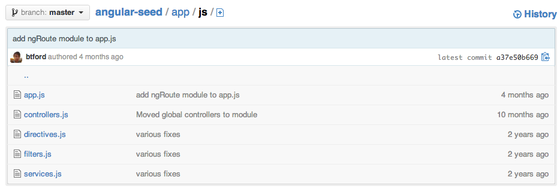

Rescuing the MIA Angular Model
and Making it Real-Time
Matthew Creager
@matt_creager


Enough about me, let's chat about your Angular Application and it's Data Model
1
The magic & mystery
of the missing Angular Model
2
Take the M out of MIA
and put it back in MVC
and put it back in MVC
3
Make it real-time
1
The magic & mystery
of the missing Angular Model
The Magic
++ A convenient, consistent API for data access and manipulation
++ an authority on state change
++ a home for business logic
++ data encapsulation
The Mystery


Anything on $scope is a model right ?
$scope.model = data;
$scope.model = data;The first attempt, sans Model

So very, very, bad
- Data is married to the life-cycle of a controller
- Code is self obfuscating
- Extend what ?
- Go directly to storage; do not pass go, do not collect $200
Anything on $scope is a model right ?
Not so much

2
Take the M out of MIA
and put it back in MVC
and put it back in MVC
Today's Todo Application
The Onion
Let's attack the architecture
Visit the view
Come into contact with the controller
Meet the Model
Finale with the Data Layer
Current landscape; acceptable for small projects.
Architecture

Up & coming architecture for everything else.
So very, very, sensible
- It's how we think
- How we work
- How we version control
A View with a solid foundation
 {{ unit.name }}
{{ unit.points }} points
{{ unit.cost | currency }}
{{ unit.name }}
{{ unit.points }} points
{{ unit.cost | currency }}
{{ unit.description | words:15 }}
Is about presentation and interaction
A Controller with a solid foundation
.controller('UnitCtrl', [
'$scope',
'$editUnitModal',
'unitFactory',
function($scope, $editUnitModal, unitFactory) {
$scope.units = unitFactory();
$scope.units.initialize().then(function() {
// Units are loaded!
}).finally($scope.$apply.bind($scope));
$scope.editUnit = function(unit) {
$editUnitModal.open(unit);
};
}]);Communicates what your application is doing
FINALLY THE MODEL
Brief aside: The Factory
.factory('rosterFactory', [
'$timeout',
'rosterService',
function($timeout, RosterService) {
return function rosterFactory(id) {
var service = new RosterService(id);
return new RosterModel(service);
};
}]);because Models don't make themselves!
MUCH SUSPENSE
The MISSING MODEL !
.factory('rosterFactory', [
'$timeout',
'rosterService',
function($timeout, RosterService) {
return function rosterFactory(id) {
var service = new RosterService(id);
return new RosterModel(service);
};
}]);such dissapointment, too easy.
API Storm
- extend
- initialize
- get
- sync
- set
- key/child
- omit
The service, because every foundation starts
.factory('rosterFactory', [
'$timeout',
'rosterService',
function($timeout, RosterService) {
return function rosterFactory(id) {
var service = new RosterService(id);
return new RosterModel(service);
};
}]);with a ... solid foundation
3
Make it real-time
First Register event bindings
- Set: Existing property receives new value
- Add: New property
- Remove: Removed property
Recognize that you need the right information to maintain a local Representation of your remote data and that requires the right events.
Second Fetch Everything
- Prime the Model
- Resolve, emit or callback When Complete
Return an object, populate it later
Promises (Q) for the one-hit wonders, events for the other stuff
Third (if you must) Persist Local Changes
- Monitor local object
- Calculate the diff
- Push changes upstream
Kiss your error locality, performance and sanity good-bye and create an audit log
Conclusion
Models provide an API for accessing and manipulating data
Data encapsulation is important, especially in Angular
Make a model real-time by:
- 1. Monitoring remote events
- 2. Performing an initial fetch
- 3. Monitoring and persisting local state
Signs you’re doing it right:
- Your model is easy to unit & intergration test
- Your model is easy to extend
- Your model is portable
- Your controllers are skinny
- "A place for everything, everything in its place." - Benjamin Franklin
GoAngular & Examples on GitHub
/goinstant/goangular/mattcreager/talks/realtime-angular-model/mattcreager/todo-example